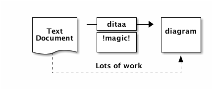

+--------+ +-------+ +-------+
| | --+ ditaa +--> | |
| Text | +-------+ |diagram|
|Document| |!magic!| | |
| {d}| | | | |
+---+----+ +-------+ +-------+
: ^
| Lots of work |
+-------------------------+
ditaa 學習筆記
不知道為什麼，對 純文字 (plain text) 特別著迷，寫文件用 AsciiDoc 或 Markdown，畫 UML 用 PlantUML (或 UMLet)，製作圖表 (diagram) 當然也不能例外。
或許你也曾在程式碼註解或技術文件裡看過用符號拼湊出來的圖表，就像下面這樣，是不是非常的精美 :P
這樣做的好處是，從原始的文件就能直接閱讀圖表，若有需要產生更精美的版本，再交給其他工具處理即可。沒錯，這本書的主角 ditaa 可以將 文字圖 (ASCII Art) 轉換成圖檔。
以上面的例子而言，ditaa 可以產生下面的圖形：

心動了嗎？